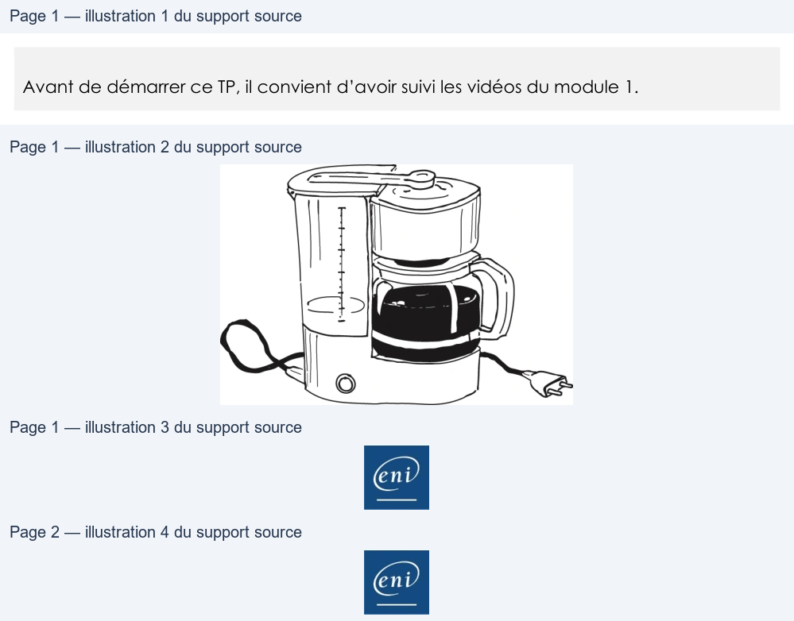

Transcription du document du Drive TSSR. La mise en forme est adaptée au Web ; les compléments IA du portail sont présentés séparément.
Initiation au scripting Bash
TP du Module 01 – Analyse
Avant de démarrer ce TP, il convient d’avoir suivi les vidéos du module 1.
Objectifs :
Traduire un besoin donné en algorithme.
Prérequis :
Aucun
Consigne :
L’analyse du besoin et le cahier des charges suivant ont été réalisés.
On souhaite faire du café avec une cafetière de ce type :
Pour faire du café, il faut :
•
De l’eau
•
Du café moulu
•
Un filtre
•
Une cafetière
• De l’électricité
Page 1/2
© ENI – Tous droits réservés
=
Initiation au scripting Bash
Les quantités d’eau et de café moulu sont variables en fonction du nombre de tasses de
café souhaitées. Le nombre de tasses doit être connu avant la préparation du café.
•
Écrire le pseudo-code du processus de préparation du café.
•
Réaliser l’organigramme correspondant au pseudo-code écrit précédemment.
Page 2/2
© ENI – Tous droits réservés
